戦慄のオタモイロード、さらに先に進む
幸せの黄色いハンカチトリオ。
トンネルを抜け、落石でひん曲がった手すりにビビりつつ、先へ進むと岩壁にこれまた竜宮門のようなモノが現れる。
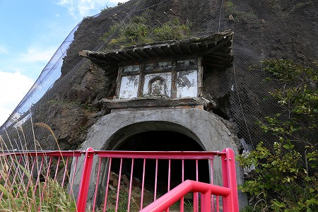
またトンネルか！と思ったら、中は浅い洞窟だった。
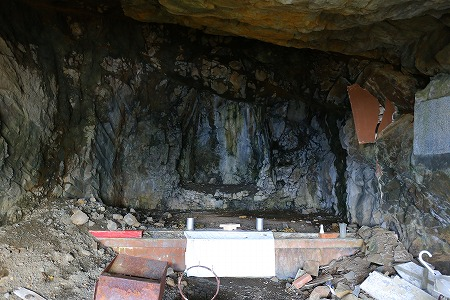
この洞窟は
白蛇辨財天洞といい、このオタモイ遊園地を作った加藤秋太郎氏が奥の壁の白い部分を白蛇の化身だと思っていたとか。
娯楽施設が軒を連ねていたオタモイ遊園地の中でも特異な場所であり、それだけに肝ともいえる場所かもしれない。
そしてオタモイ遊園地の数少ない遺構でもあるのだ。
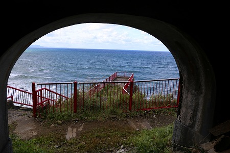
洞内から外を見ると海側に突き出した部分が見える。
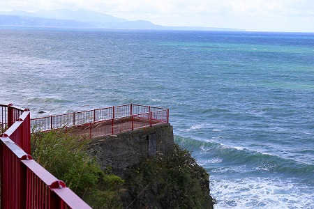
これはかつて
龍宮閣が建っていた場所だ。

ハッキリ言ってこんな狭い場所にこれだけの規模の建物が建っていたとは驚きとしか言いようがない。
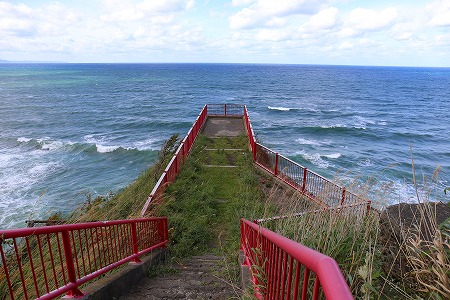
だってこんなですよ。
建売住宅1棟分ってとこじゃないすか？
ま、実際には懸け造りで、崖にせり出して建っていたから、この手すりよりも外側まであったわけだが。
オタモイ遊園地が出来たのが昭和11年。
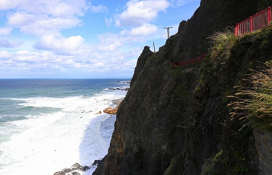
これほどのギリギリな場所に建物を建てたこと自体驚きだ。
建設中も事故とかあったんだろうなあ。
ちなみに昭和27年の火災の際には消防車も近づけるはずもなく、成すすべもなく焼失してしまった。
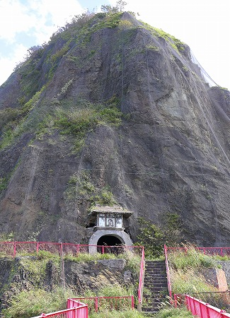
龍宮閣跡地から見た白蛇辨天洞はこんな感じ。
はるか上まで金網で覆われている。
先を見ると、崖にへばりつくように数棟の建物が見える。
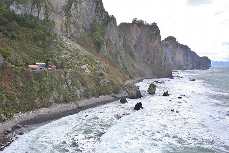
あれが目的地のオタモイ地蔵だ。
崖に沿った道を進んでいくと、とんでもない事に！
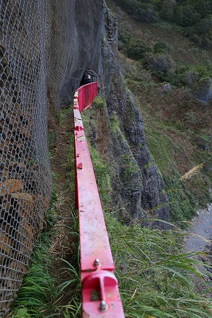
遊歩道の山側に張られている落石防止用の金網の内側で大量に落石しちゃってて、金属ネット自体が海側に膨らんでしまい、赤い手すりとの間が
物凄く狭くなってしまっているのだ！
義理堅い夜のお付き合いが祟って、ウエストサイズが気になりがちなお年頃の不詳私。
果敢に正面から突っ込んでみるものの、ご覧の通り。
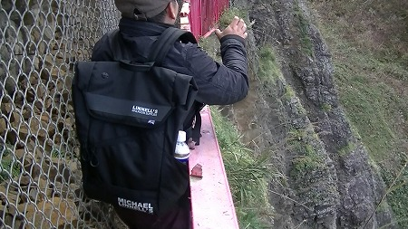
（撮影；大魔王君）
見事金網と手すりの間に挟まってしまった…。
仕方なく一旦引き返してリュックを手に持ち、横歩きで何とか狭い隙間を通過することができた。
あとお腹が5ｃｍ出てたら通れなかったかもしれないな…。
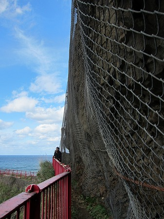
一方、振り返ればスリムな大魔王君は苦も無く難所を通過しているではないか。
何かムカつくぞ！もう少し引っかかれよ大魔王！舎弟のくせに名前が大魔王ってのもムカついてきたぞっ！ムキーッ！
…と、日頃の自分の不摂生を完全に棚に上げつつ、勝手にムカついていると次なる難所が…。
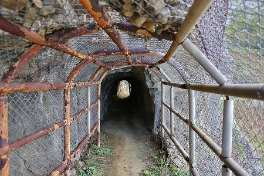
二つ目の手掘りトンネルが現れる。
トンネル手前の鉄パイプと金網のアーチには大量の落石が。
それ以上にビビったのがトンネルの先に見えた光景。
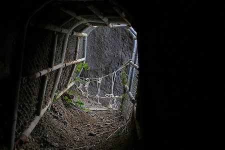
…手すりがロープになってるんですけど…
意を決してトンネルを抜ける。
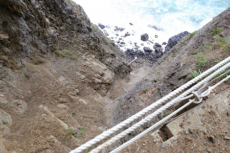
うわわわうわわわ、ヤバイ！
ロープのすぐ外はこんな。落ちたら即、あの世行き。
多分、落石で金属製の手すりが崖下に落っこっちゃってとりあえず仮設の手すりをつけたんだろうなあ…。
ハッキリ言ってロープの手すりは気休めだ。
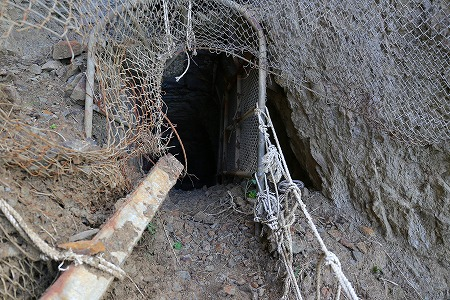
何とか、第三のトンネルまでたどり着く。
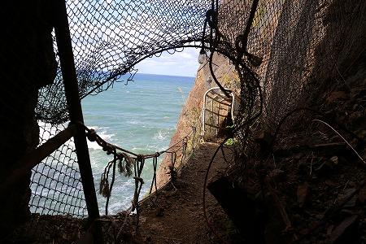
振り返るとこんな感じ。生きてて良かった…！
という訳で第三の手掘りトンネルを通過。
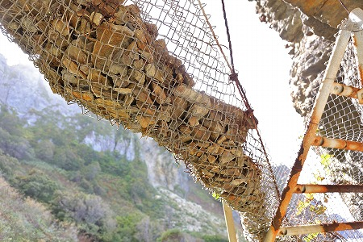
ここも頭上の金網には大量の落石が。
第三のトンネルを通過して振り返るとこんな。
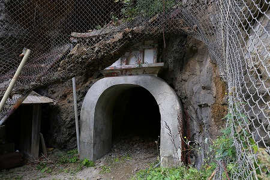
ここもまた竜宮門。
この竜宮門の愛好具合は何なんだろう。
第三のトンネルを抜けた傍らには佐一郎地蔵と書かれた石の地蔵が立っていた。
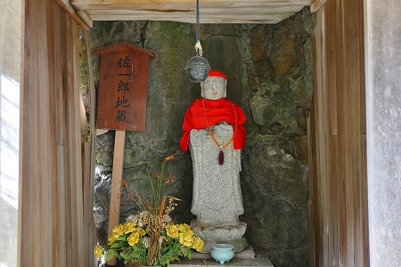
佐一郎が誰かは謎だが（※）、段々オタモイ地蔵に近づいてきた感じがしてきたぞ。
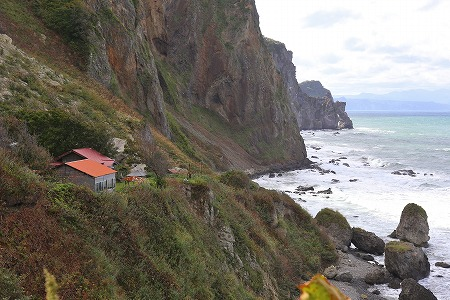
おおお、もうすぐじゃないか！
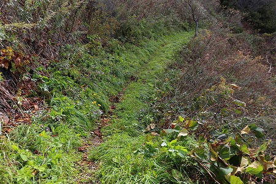
崖沿いにあった道も第三のトンネルを過ぎるとぐっと内陸側に入り、穏やかな道になった。
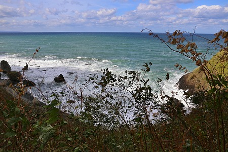
先ほどは遥か下にあった海面もだいぶ近づいてきた。
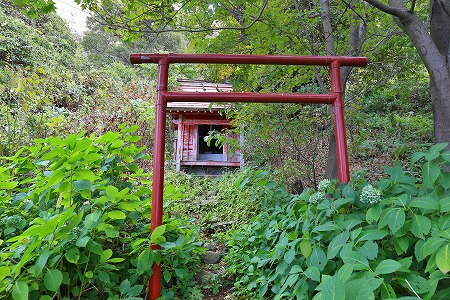
お稲荷さんがある。もう地蔵尊はすぐそこだ。
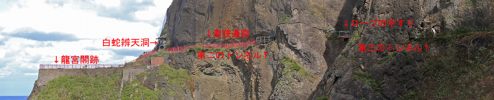
改めて今来た道を振り返る。
龍宮閣跡、白蛇辨天洞からの劇狭通路、第二のトンネル、恐怖のロープの手すり、第三のトンネルと、
冒険の連続といっても過言ではない。
そんな先に現れた
オタモイ地蔵。
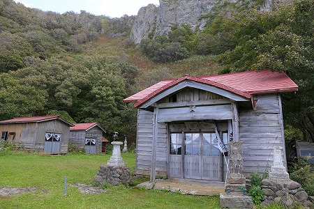
電話をしてあったので、堂守のおじさんが待っていてくれた。
話を聞くとかつてはこの場所には10世帯ほどの家族が住んでいたが、今はおじさんが一人で居住しているそうな。
10世帯というと大したことがないように思えるが、昔の10世帯というのは爺ちゃん婆ちゃんと世帯主夫婦、子供も5〜6人はいたから総勢100人ほどの集落だったのだ。
正直言ってこんな辺境の地に100人近くの人が住んでいたとは驚くほかない。
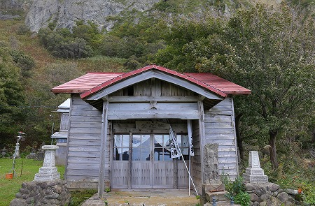
このオタモイ地蔵はオタモイ遊園地ができるはるか前から子育てや子宝の神様として北海道の広い範囲に信仰圏を持っていたという。
昭和初期にオタモイ遊園地が作られ、海沿いに道が設けられたがそれ以前は背後の険しい山道を人々は参拝の為に歩いてきたという。
また、船着き場もあったので、遠方から船に乗って参拝に訪れる人も多かったとか。
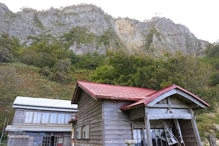
地蔵尊の背後は切り立った屏風のような険しい山で、一体どこに山道があったのか見当すらつかない。
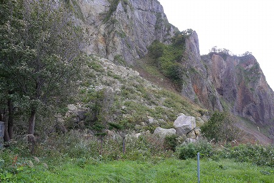
さらに裏側には近年崖崩れが生じたのだろう、建物のすぐ近くにまで巨大な岩がゴロンゴロン転がっていた。
ここに住むのって二重三重に凄い環境だと思うんですけど…。
で、いよいよ地蔵堂に参拝である。
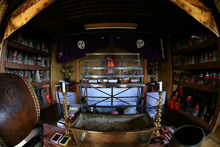
北海道屈指の地蔵霊場であるオタモイ地蔵。
最大の関心ごとは北海道の地蔵信仰がいかなるスタイルなのか、という事。
北海道においてここのような民間信仰霊場は驚くほど少ない。
従って、北海道の信仰シーンは歴史的、地理的な条件を考えると
津軽の民間信仰が色濃く反映しているのではないか、と予想していたのだ。
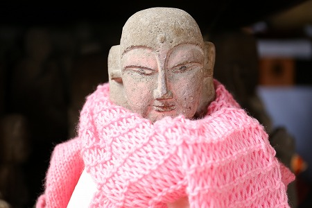
堂内には数多くの石のお地蔵さんが並んでいた。
その数は3000体と言われている。
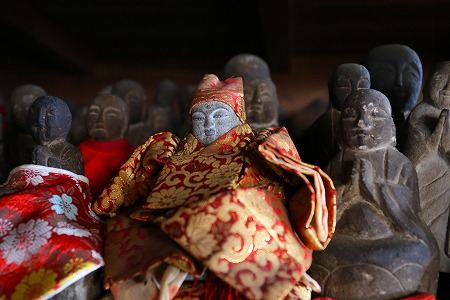
そしてやはりいくつかの地蔵は津軽でよく見かけたような着物をまとい、顔に化粧を施した地蔵であった。
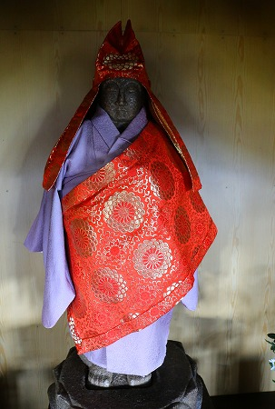
こちらは袈裟と着物のフルセットのお地蔵さん。
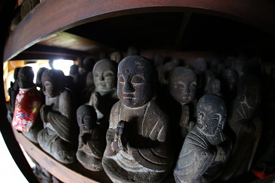
これらの石像を背負って、今我々が歩いてきた遊歩道よりもはるかに険しく危ない道を使い女性が参拝に来ていたのかと思うと身がすくむ思いだ。
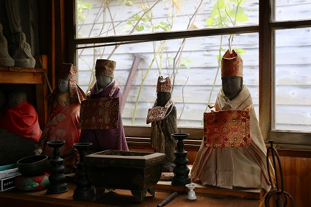
隣の建物にも
津軽スタイルのお地蔵さんが何体も奉納されていた。
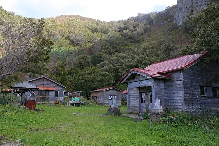
かつて10世帯が暮らしていたころは、背後の急斜面に段々畑を作って農作物を育てていたという。
今では送電も途絶え（自家発電だと思う）、道も非合法化されてしまい、存在自体を消されかかっているオタモイ地蔵。
恐らく堂守のおじさんがいなくなったら、この世からオタモイ地蔵尊は消えてしまうのであろう。
ひょっとしたら、数年後には「北海道には地蔵信仰の霊場などなかった」という歴史認識がなされてしまうかもしれない。
そうならないためにも、敢えてオタモイ地蔵に訪問したのである。
というわけで、
2016年秋の時点ではオタモイ地蔵は信仰の地として機能していた、という事実を明言しておく。
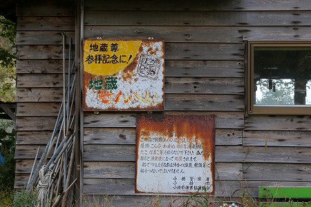
かつては1日に何百人も参拝していた、という。
そんな時代の名残、地蔵せんべいの看板も今は錆びて消えかかっていた。
市に入域を止められ、送電もなく、他の住民もいなくなった厳しい環境のこの地でおじさんが踏みとどまっていられる理由とは一体何なんだろう？
…ヘタレの私には判る筈もないのであった…
ホント凄いことです。
※…佐一郎地蔵は龍宮閣建設の際に崖から転落して亡くなった作業員の供養の為に建立されたそうです。（読者情報）